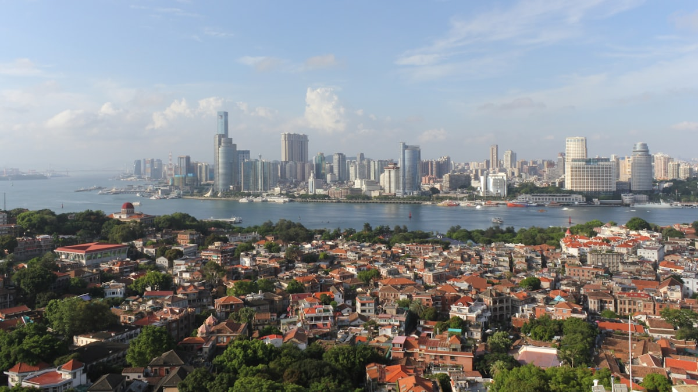
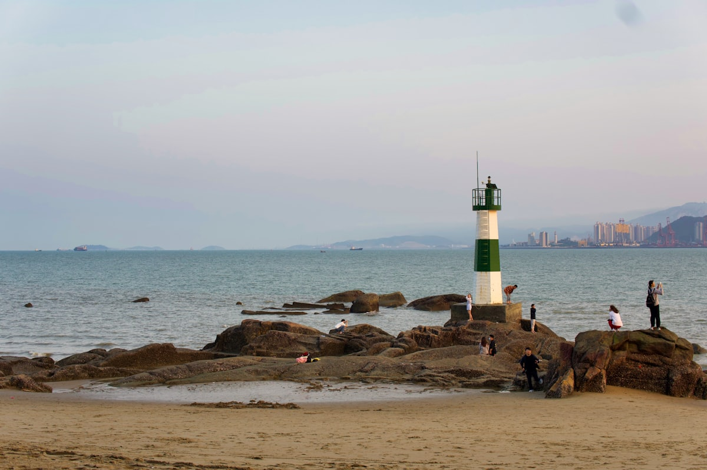
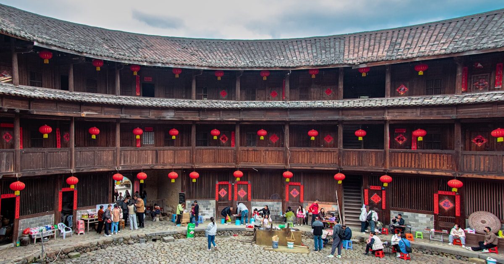
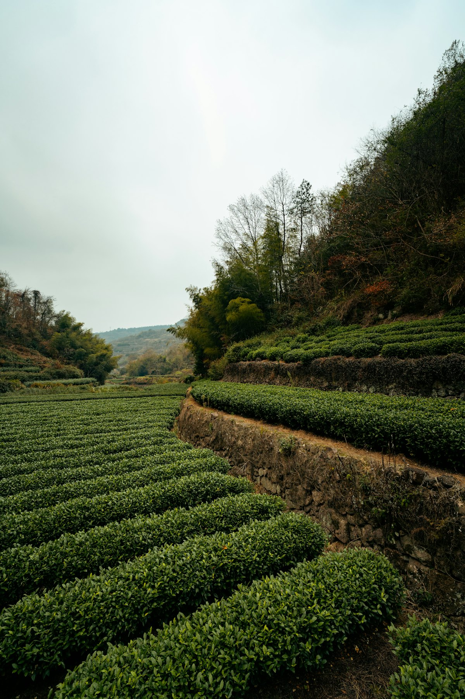
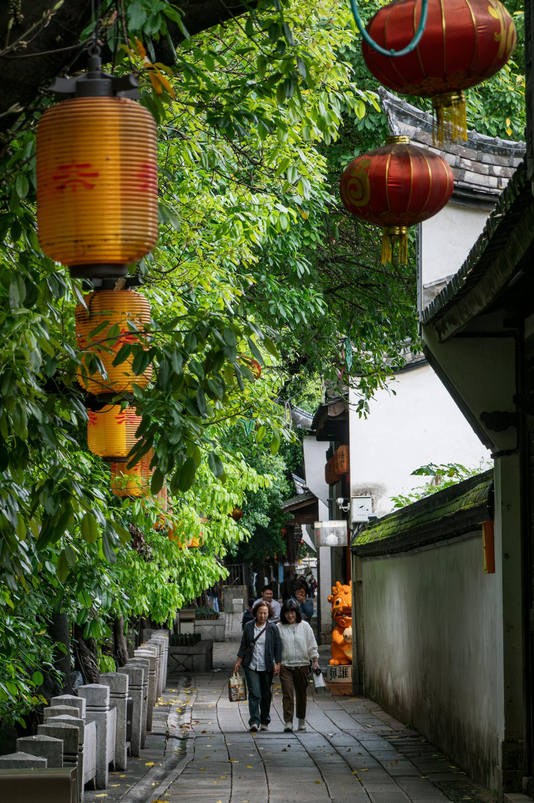
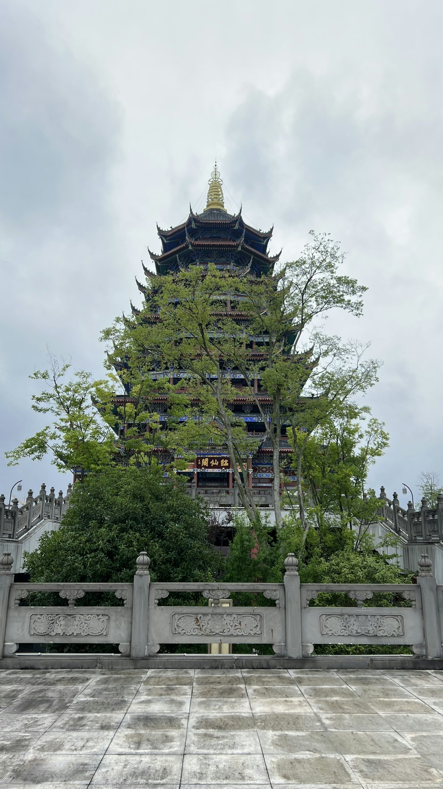
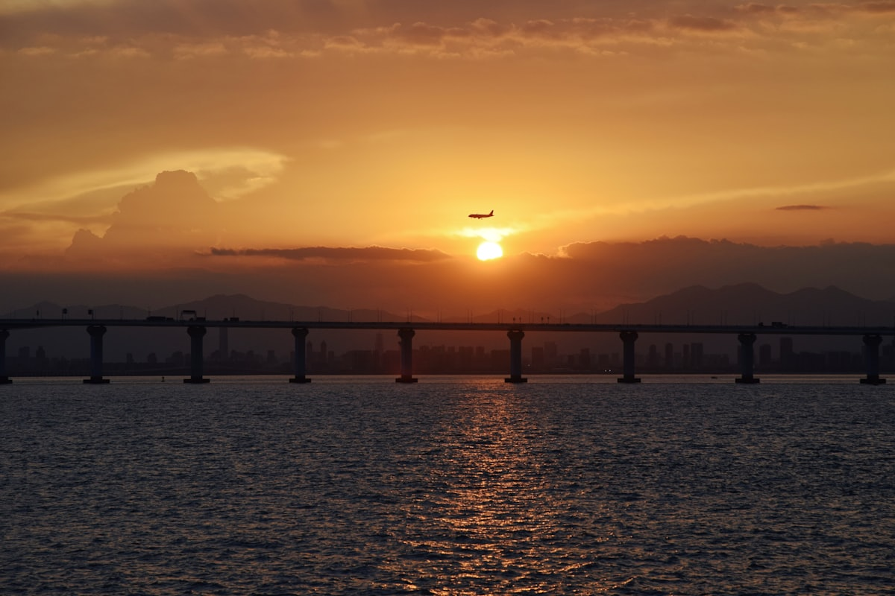
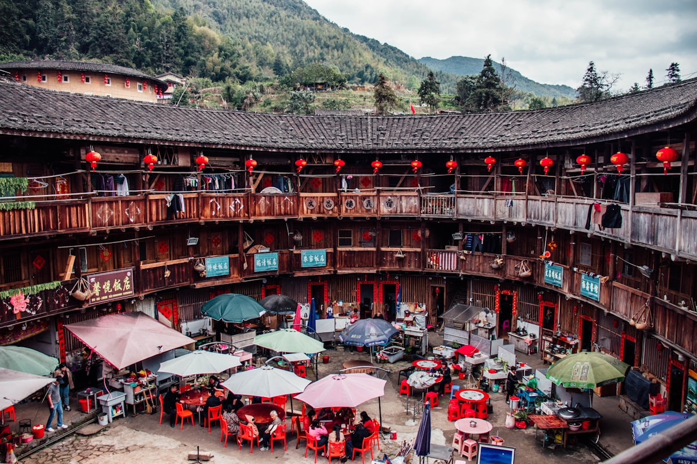

| 事项 | 结论 |
|---|---|
| 事项 | 结论 |
| 推荐方案 | 10 天 9 晚（山海环线，沿海进山出） |
| 返程约束 | 第 10 天从土楼返厦门，下午/晚间返程 |
| 行程链 | 厦门 → 鼓浪屿 → 泉州 → 福州 → 武夷山 → 土楼 → 厦门 |
| 预算（人均） | 经济 4000–5000 ／ 标准 6000–8000 ／ 舒适 9500–13000 |
| 三件提前事 | ① 鼓浪屿轮渡提前 2–3 天购票 ② 武夷山竹筏票提前订 ③ 夏季台风季关注天气 |
| 季节提醒 | 3–5 月与 10–11 月最佳；7–9 月炎热且有台风风险 |
| 交通卡 | 福建省内高铁直达主要城市，无需办交通卡 |
以下为 10 天 9 晚的推荐节奏。每日主景点 ≤2 个，沿海段以高铁衔接，山区段预留整天。
| 日期 | 行程 | 过夜地 | 主题 |
|---|---|---|---|
| D1 抵厦 | 抵达厦门，入住中山路/曾厝垵，傍晚环岛路 + 白城沙滩日落 | 厦门 | 抵达 + 预热 |
| D2 | 鼓浪屿（全天）：日光岩、菽庄花园、龙头路，傍晚返厦 | 厦门 | 世界遗产·海岛 |
| D3 | 南普陀寺 → 厦门大学 → 沙坡尾/猫街，傍晚曾厝垵 | 厦门 | 大学与老街 |
| D4 | 高铁赴泉州：开元寺、西街、清净寺、洛阳桥 | 泉州 | 海丝古城 |
| D5 | 高铁赴福州：三坊七巷（全天）、上下杭、林则徐纪念馆 | 福州 | 闽都人文 |
| D6 | 福州烟台山/鼓山 → 傍晚高铁赴武夷山，宿三姑度假区 | 武夷山 | 转场武夷 |
| D7 | 武夷山：九曲溪竹筏 + 武夷宫 + 天游峰 | 武夷山 | 丹山碧水 |
| D8 | 武夷山：一线天/虎啸岩 或 大红袍茶区（可选），下午赴南靖 | 南靖土楼 | 茶山与转场 |
| D9 | 田螺坑土楼群 → 云水谣古镇（土楼民宿体验） | 南靖土楼 | 土楼人家 |
| D10 返程 | 上午裕昌楼/塔下村，午后返厦门，晚间返程 | — | 收尾 |
以下为 10 天全程的逐小时执行时间线，可当作「当天打开照着走」的清单。标注 ※ 的可选项视体力与天气取舍。
| 时间 | 事项 |
|---|---|
| 14:00–17:00 | 抵达厦门（高铁到厦门北站，飞机到高崎机场），地铁/打车进城 |
| 17:30–18:30 | 办理入住（推荐中山路或曾厝垵，近地铁与海滨） |
| 19:00–21:00 | 环岛路骑行一段：白城沙滩、胡里山炮台外观，晚餐吃沙茶面/海蛎煎 |
| 21:00 | 回酒店休息，为 D2 鼓浪屿攒体力 |
| 时间 | 事项 |
|---|---|
| 08:00–08:40 | 邮轮中心厦鼓码头乘轮渡（约 20 分钟，船票含往返，需实名提前购票） |
| 09:00–11:00 | 日光岩（联票 90 元）：全岛最高点，俯瞰红顶老别墅与海 |
| 11:30–13:00 | 菽庄花园 + 钢琴博物馆：闽南园林与钢琴文化，龙头路午餐 |
| 13:30–16:00 | 漫步笔山路/鸡山路老别墅区、三一堂、龙头路商业街，吃鱼丸与馅饼 |
| 16:30 | 码头乘船返厦门，晚餐中山路：土笋冻、姜母鸭 |
| 时间 | 事项 |
|---|---|
| 08:30–10:30 | 南普陀寺（免费）：闽南名刹，可登五老峰远眺厦大与海 |
| 10:30–12:00 | 厦门大学（需提前预约）：芙蓉湖、颂恩楼、芙蓉隧道 |
| 12:00–13:00 | 厦大西门附近午餐：沙茶面/海蛎煎/芋包 |
| 13:30–16:30 | 沙坡尾（免费）：老渔港 + 文创街区，猫街、艺术西区 |
| 17:00–19:00 | 曾厝垵夜市：土笋冻、烤生蚝、花生汤，宿厦门 |
| 时间 | 事项 |
|---|---|
| 07:30 | 厦门站乘高铁至泉州站（约 30–40 分钟） |
| 09:00–11:30 | 开元寺（免费）：东西塔、甘露戒坛，中国最大佛教寺院之一 |
| 11:30–13:00 | 西街美食：面线糊、姜母鸭、石花膏 |
| 13:30–15:00 | 清净寺（免费）：中国现存最古老伊斯兰教寺之一；顺访天后宫 |
| 15:30–17:00 | 洛阳桥（免费）：中国第一座跨海石桥，看桥墩与牡蛎固基 |
| 17:30 | 返泉州站乘高铁赴福州（约 1.5h），宿三坊七巷附近 |
| 时间 | 事项 |
|---|---|
| 08:30–11:30 | 三坊七巷（免费）：南后街 + 衣锦坊、文儒坊、郎官巷，看马鞍墙与闽都古厝 |
| 11:30–12:30 | 坊巷内午餐：佛跳墙、荔枝肉、鱼丸肉燕 |
| 13:30–15:30 | 林则徐纪念馆（免费）或 严复故居、二梅书屋 |
| 16:00–18:00 | 上下杭（免费）：老福州商埠风情，河畔散步看夜景 |
| 18:30 | 晚餐：福州菜（太平燕、鼎边糊），宿福州 |
| 时间 | 事项 |
|---|---|
| 08:30–10:30 | 烟台山（免费）：万国建筑博览，老洋房 + 闽江视角 |
| 11:00–12:00 | 福州站乘高铁赴武夷山东站（约 2 小时） |
| 13:00 | 入住三姑度假区（离景区最近） |
| 14:30–17:30 | 武夷宫 + 大王峰远眺，晚上看《印象大红袍》山水实景演出（可选） |
| 18:30 | 晚餐：岚谷熏鹅、武夷山茶宴 |
| 时间 | 事项 |
|---|---|
| 08:00–10:30 | 九曲溪竹筏漂流（130 元，需提前预约）：乘竹筏看九曲十八弯，约 90 分钟 |
| 11:00–12:00 | 武夷宫景区游览：宋街、柳永纪念馆 |
| 12:00–13:00 | 午餐：当地农家菜（红眼鱼、笋干） |
| 13:30–16:30 | 天游峰（武夷山大门票 + 观光车，联票约 140 元）：登峰俯瞰九曲溪，全程约 3 小时 |
| 17:30 | 返回三姑度假区，泡脚休息 |
| 时间 | 事项 |
|---|---|
| 08:30–10:30 | 大红袍景区（含联票内）：看母树大红袍，走岩骨花香漫游道 |
| 11:00–12:00 | 可选：一线天 / 虎啸岩（体力型，可二选一） |
| 12:30 | 午餐后前往武夷山东站 |
| 13:30–18:00 | 高铁经福州/厦门转南靖站（约 4–5h），抵南靖土楼景区 |
| 18:30 | 入住土楼民宿（田螺坑/云水谣），体验土楼人家生活 |
| 时间 | 事项 |
|---|---|
| 08:30–11:00 | 田螺坑土楼群（门票 90 元）：「四菜一汤」经典观景台，俯瞰五座土楼 |
| 11:30–13:00 | 裕昌楼（东倒西歪楼）+ 塔下村，午餐农家菜 |
| 13:30–17:00 | 云水谣古镇（门票 90 元）：和贵楼、怀远楼、大水车，溪畔漫步 |
| 18:00 | 晚餐在民宿尝客家菜（酿豆腐、梅菜扣肉） |
| 时间 | 事项 |
|---|---|
| 08:30–10:00 | 清晨再逛逛塔下村/土楼晨景，采购伴手礼（茶叶、客家米酒） |
| 10:30 | 包车返回厦门（约 2.5h），或经南靖站转高铁 |
| 12:00–14:00 | 抵达厦门后午餐，采购伴手礼（鼓浪屿馅饼、沙茶酱） |
| 14:30–18:00 | 赴厦门北站/高崎机场，返程 |
必去（必去）/ 顺路（顺路）/ 可跳过（可跳过）。

必去
必去
必去
必去
顺路
顺路
可跳过图片为 Unsplash 主题图（鼓浪屿灯塔、土楼、茶园、古厝、闽南滨海均为实景或同主题示意），用于页面配图。更多免费景点：南普陀寺、鼓山、五老峰、洛阳桥。
点击左侧节点可在地图上定位；点击地图 marker 会高亮对应节点。坐标为 WGS-84 转 GCJ-02 纠偏后标注。
以下为单人、不含购物的估算；门票为旺季参考价，以现场为准。交通按高铁往返计（从华东周边城市出发约 1200–1800 元），不同出发地浮动较大。
| 项目 | 经济（4000–5000） | 标准（6000–8000） | 舒适（9500–13000） |
|---|---|---|---|
| 往返交通 | 高铁约 1200–1600 | 高铁/飞机约 1600–2600 | 飞机 + 接送约 3200–4500 |
| 住宿（9 晚） | 青旅/快捷 900–1300 | 连锁酒店 2000–3000 | 海景/土楼精品 4800–6500 |
| 门票 | 基础景点约 350 | 含竹筏联票约 600 | 全含 + 演出约 1100 |
| 餐饮（10 天） | 650–900 | 1300–1700（含海鲜） | 2200–3000（老字号/茶宴） |
| 省内交通 | 高铁 + 公交 400–550 | 高铁 + 包车 750–1000 | 包车/拼车 1300–1800 |
带娃推荐：厦门科技馆、鼓浪屿钢琴博物馆、泉州海外交通史博物馆、武夷山竹筏（小朋友最爱）。土楼行程放慢，一晚够玩。夏天空调房一定要提前订。
7–9 月台风可能停航停筏，出发前 1 周关注气象。若遇台风，鼓浪屿轮渡和九曲溪竹筏是第一批取消的项目，行程弹性安排。酒店淡季价低 20–30%。
| 方式 | 时长 | 参考价 | 备注 |
|---|---|---|---|
| 高铁（推荐） | 视出发地 2–9h | 二等座 300–1800 元 | 厦门北/福州站枢纽，班次密集 |
| 飞机 | 视出发地 1.5–3.5h | 400–2200 元 | 厦门高崎 / 福州长乐两场 |
| 自驾 | 视出发地 | 高速费 + 油费 | 省内山路多，土楼段建议租车 |
| 区域 | 价格/晚 | 优点 | 短板 |
|---|---|---|---|
| 厦门中山路/曾厝垵 | 快捷 250–450 / 海景 500–1200 | 近海滨、美食与公交 | 旺季一房难求 |
| 泉州西街附近 | 民宿 250–400 | 近开元寺，古城市井气 | 老房子隔音一般 |
| 福州三坊七巷旁 | 快捷 250–400 | 近古厝与地铁 | 离车站稍远 |
| 武夷山三姑度假区 | 民宿 250–500 / 星级 600–1200 | 离景区最近，茶山环绕 | 旺季价格翻倍 |
| 南靖土楼民宿 | 120–300 | 住进土楼，客家氛围浓 | 条件较简朴 |